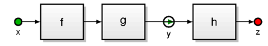
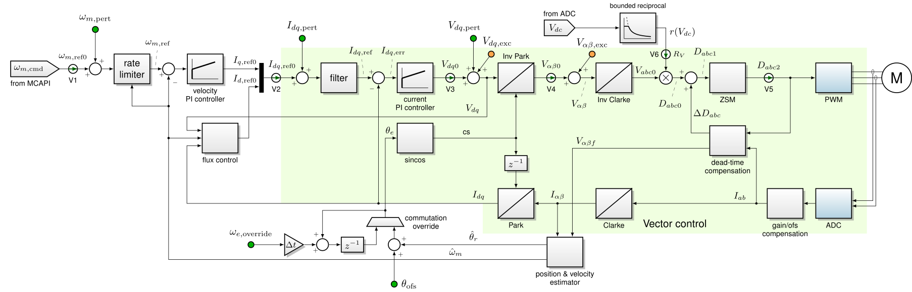
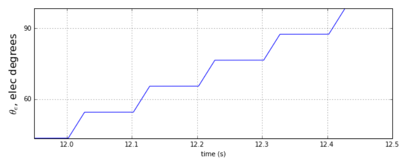
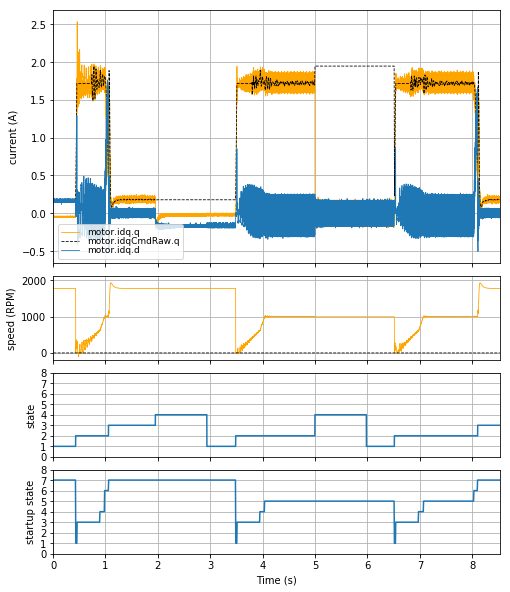
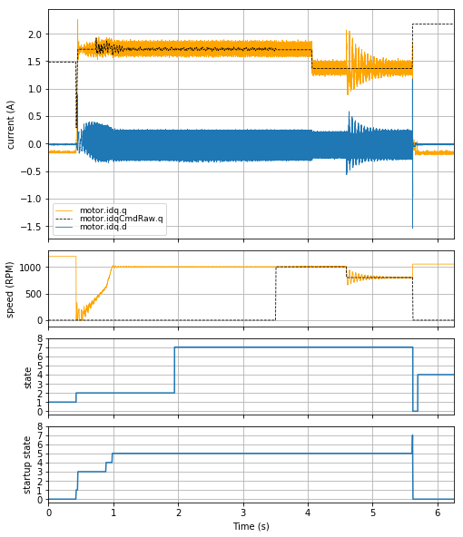
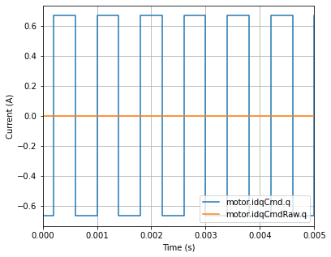
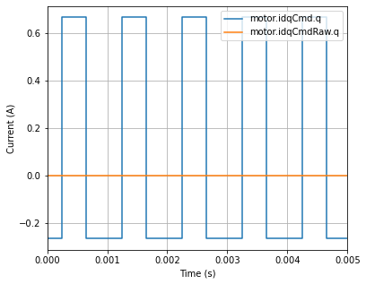
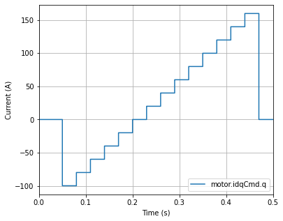

4.5. 测试框架¶
测试框架包含若干运行时参数，这些参数与 MCAF 其他部分使用的可调参数相结合，可将控制器置于特定的测试模式，以调试和测试控制算法、电路板和/或电机的正确运行。它与 FOC 模块的设计紧密耦合。
4.5.1. 概述¶
测试框架包含以下功能。
操作模式 ——决定电机控制器是以正常模式运行，还是以控制器功能的子集运行，用于 增量测试，使得例如 PWM 输出可以先测试，然后是三相调制，再是电流环路，最后是速度环路。
强制状态切换 ——允许测试操作员强制执行某些状态转换
覆盖 ——这些是布尔标志，决定某些功能（如换相角、直流母线补偿或输入速度命令）是正常运行还是从备用源接收输入。
扰动信号 ——向速度、电流或电压命令注入扰动信号。有两个可用选项：
故意堆栈溢出 ——允许测试硬件堆栈溢出陷阱。
保护 ——测试保护防止意外激活测试框架功能。
性能分析时间戳 ——这些是 16 位定时器快照，可用于分析主控制 ISR 的性能。
触发平均 ——用于计算变量在所需时间间隔内的平均值。
死循环、堆栈溢出和保护是适用于整个 MCAF 固件的功能，而其余功能适用于系统中的每个电机。
4.5.2. 增量测试¶
电机控制测试应能使用与预期发布固件尽可能等效（理想情况下完全相同）的固件进行。这避免了因测试固件与发布固件不同步而导致在发布固件中复现问题时出现错误。
MCAF 包含内置测试模式，以支持运行时所谓的“增量”测试，允许工程师从功率电子器件的低级测试开始，逐步验证开环换相、电流控制环路，最后到速度控制环路，所有这些都无需重新编译软件。这种方法在调试新电路板和故障排除时都至关重要。
4.5.3. 测试框架参数¶
下表列出了各种情况下使用的测试参数。参数既存在于主电机数据结构 MCAF_MOTOR_DATA中，也存在于主系统数据结构 MCAF_SYSTEM_DATA中，并且是分层结构的（例如 motor.testing.sqwave.idq.q 为下方所示的 q 轴电流命令扰动）。
参数 |
描述 |
|---|---|
|
包含每个电机的测试参数 |
|
包含方波发生器的参数 |
|
半周期，以 PWM 个周期为单位，测试方波的 |
|
速度命令扰动的幅值 |
|
电流命令扰动的幅值 |
|
d 轴电流命令扰动的幅值 |
|
q 轴电流命令扰动的幅值 |
|
电压命令扰动的幅值 |
|
d 轴电压命令扰动的幅值 |
|
q 轴电压命令扰动的幅值 |
|
方波信号，0 或 ±1（0 禁用所有扰动） |
|
包含非对称脉冲波形发生器的参数 |
|
包含波形两个相位的参数 |
|
持续时间，以 PWM 个周期为单位，每个相位的 |
|
速度命令扰动的幅值 |
|
电流命令扰动的幅值 |
|
d 轴电流命令扰动的幅值 |
|
q 轴电流命令扰动的幅值 |
|
电压命令扰动的幅值 |
|
d 轴电压命令扰动的幅值 |
|
q 轴电压命令扰动的幅值 |
|
第二相位幅值与第一相位幅值的比值 |
|
非对称脉冲波形信号，0 或 ±1（0 禁用所有扰动） |
|
包含电流扰动信号自动步进的参数 |
|
每个相位电流步进的次数 |
|
电流命令扰动的步长 |
|
d 轴电流命令扰动的步长 |
|
q 轴电流命令扰动的步长 |
|
位域（在本文档后面表示为
|
|
控制换相覆盖期间使用的电气频率值 |
|
允许换相角变化的延迟，在换相覆盖期间使用 |
|
添加到每相占空比的零序调制偏移。 |
|
指定换相频率变化的周期 |
|
指定应用 |
|
控制电机的操作模式 |
|
影响主要状态机的状态切换 |
|
用于性能分析的捕获时间戳参考 |
|
用于性能分析的捕获时间戳值 |
|
包含每个系统的测试参数 |
|
测试标志，包括 ISR 和主循环的死循环标志，以及堆栈溢出 |
|
启用测试框架功能 |
说明
4.5.4. 测试保护¶
测试模式的存在确实代表了意外进入这些模式的微小风险。如果未有意设置，进入测试模式的唯一方式是 RAM 中的某些状态变量自行改变。这可以被视为一个不太可能的事件，原因之一如下：
随机硬件故障
软件实现错误
从 diagnostic kernel执行写内存命令，这又由以下原因之一引起：
以某种方式精确复现所需数据的通信错误
恶意来源
不幸的是，这种变化是持久的，测试模式不会自行恢复到正常行为。
4.5.4.1. 生产中的测试功能：保留还是移除？¶
这引发了一个原则性问题：测试框架是否应保留在生产代码中？关于运行时测试功能有两种观点。
测试功能应保留在生产代码中
生产代码实际上就是被测试的代码
如果以后观察到问题（例如客户问题），它有助于理解问题，甚至可以在现场激活
测试功能不应保留在生产代码中
它们会占用额外的软件资源（CPU 时间、程序和数据存储器）
在安全关键系统中，它们增加了意外行为的风险
测试完成后应移除代码更改
我们认为选择权应留给客户；作为未来的增强功能，应用程序框架将通过代码生成过程或预处理器（#ifdef）来允许移除测试功能。无论如何，将测试中使用的更改保持在最低限度非常重要：如果我们测试代码库 X 但交付代码库 Y，任何差异在所测试功能方面不应是显著的，否则它们代表测试过程的缺陷。
4.5.4.2. 测试保护的实现¶
为了减轻意外进入测试模式的风险，提供了可选的保护机制。基本上，在每个 ISR 周期时检查保护，如果无效，则将测试参数重置为正常操作模式。保护由两个内存位置组成：密钥和超时（systemData.testing.guard.key 和 systemData.testing.guard.timeout）。要使保护有效，密钥必须匹配给定值（0xD1A6 = “DIAG”）。如果超时已过期，密钥被重置为无效值（零），否则超时递减。如果保护无效，测试参数被设置为正常条件。实现此行为的 C 代码示例如 Listing 4.2。
#define GUARD_KEY_VALID 0xD1A6
#define GUARD_KEY_RESET 0x0000
if （systemData。testing。guard。timeout == 0）
{
systemData。testing。guard。key = GUARD_KEY_RESET；
}
else
{
--systemData。testing。guard。timeout；
}
// 对每个电机重复以下代码块
if （systemData。testing。guard。key != GUARD_KEY_VALID）
{
motor。testing。overrides = 0；
motor。testing。sqwave。value = 0；
motor。testing。operatingMode = OM_NORMAL；
}
其目的是要求最少的执行时间，并在未使用诊断工具维护测试模式活动状态时禁用测试模式。保护密钥应手动设置；保护超时可由诊断工具定期自动设置为其最大值（0xFFFF）；即使在 20 kHz 下，65536 个计数代表 3.2768 秒，应该有足够的时间允许及时重新激活，即使存在操作系统或通信故障。
保护超时机制应为可选：公开可用的工具尚不支持自动超时重置，在某些情况下，额外的程序和数据存储器使用是不必要的。
注意： MCAF R1 – R5 实现了测试保护但未实现测试保护超时机制。
4.5.5. 测试框架架构¶
4.5.5.1. 信号阀¶
为了以对最终应用最小的影响添加测试模式钩子，我们在框图中引入了“信号阀”的概念。在以下示例中，它显示为一个内部有箭头的圆圈：

图 4.4 信号阀示例¶
阀门代表一个有选择的状态变量：在正常操作模式下，阀门“打开”，数据正常流过阀门，因此在 图 4.4的示例中，信号 \(y\) 由输入信号 \(x\) 通过函数 f 和 g传播决定。在测试模式下，阀门上游的模块不执行，阀门保持其值，以便实时诊断工具可以适当修改该值。
例如，在 C 中实现它的一种方式如 Listing 4.3：
int16_t x， y， z；
bool y_enable = true；
void step()
{
// executed at a regular rate
if （y_enable）
{
y = g（f（x));
}
z = h（y);
}
这使我们可以选择以正常操作模式运行控制算法（y = g(f(x)); z = h(y);），以 x 作为输入变量，或以测试模式（z = h(y);），以 y 作为输入变量。
4.5.6. 测试框架模式¶
中所示的行为 图 4.5 （ reproduced 自 图 4.2）代表了电机控制器中使用的主要信号流路径。这并未显示电机控制器的完整功能；特别是过流和堵转检测等监控功能未显示。还请注意，阴影区域代表矢量控制器，该区域内的信号有多个分量（dq 或 alpha-beta 或 abc）。

图 4.5 MCAF 磁场定向控制框图¶
电机控制器的行为可以在多种不同模式下修改，以下各节将进行描述。请参考 图 4.5 了解框图行为。这些模式是可以分配给 operatingMode 参数的枚举值。
4.5.6.1. OM_DISABLED¶
OM_DISABLED 模式代表禁用的控制器，输出晶体管设置为“最小影响状态”。阀门 V2-V5 全部关闭。
电机控制器的活动功能：
所有反馈计算正常执行，包括
ADC 读数
Park 和 Clarke 变换
换相角估计器（如果可能）
正弦和余弦计算
监控算法（堵转检测、过流/过压等）
电机控制器的非活动功能：
所有前向通道计算被禁用，包括
速率限制器
电流和速度控制环路
逆 Park 和 Clarke 变换
零序调制或空间矢量调制
PWM 最小影响状态：
输出晶体管被设置为 “最小影响状态”，即：
上桥臂晶体管关断
下桥臂晶体管以最小占空比运行以维持自举电容充电（如果不需要则完全关断）
在 OM_DISABLED 状态的行为最好实现为单独的状态（例如 STATE_TEST_DISABLE），在主状态机的状态转换之外，通过 OM_DISABLED 强制从任何其他状态进入该状态。然后可以在状态机中处理重新进入其他测试模式或正常行为，允许退出 OM_DISABLED 状态时进行干净的转换。
4.5.6.2. OM_FORCE_VOLTAGE_PWM¶
OM_FORCE_VOLTAGE_PWM 模式代表一种测试模式，其中 PWM 输出处于活动状态并从静态电机状态变量分配，如 \(D_{abc1}\) 如 图 4.5所示。阀门 V2-V5 全部关闭。
电机控制器的活动/非活动功能：同 OM_DISABLED。
用例：测试系统在恒定或缓慢变化的 PWM 占空比下的行为。
电机或其他负载可以连接也可以不连接。
使用调试工具，先将模式设置为
OM_DISABLED（先）设置 \(D_{abc1}\) 为所需值
将模式设置为
OM_FORCE_VOLTAGE_PWM
在 OM_FORCE_VOLTAGE_PWM 最好实现为单独的状态（例如 STATE_TEST_ENABLE），在主状态机的正常状态转换之外，通过 OM_FORCE_VOLTAGE_PWM 强制从任何其他状态进入该状态。过流或任何其他严重故障条件应导致进入禁用状态，需要手动重新进入启用状态。
设置 OM_FORCE_VOLTAGE_PWM 而不使用 OM_DISABLED （先）并非禁止，但可能产生不良后果，因为在模式切换时 \(D_{abc1}\) 中的任何值都会被“冻结”，除非通过调试工具更改。
4.5.6.3. OM_FORCE_VOLTAGE_ALPHABETA¶
OM_FORCE_VOLTAGE_ALPHABETA 模式代表一种测试模式，其中 PWM 输出与 ZSM 模块和逆 Clarke 模块一起处于活动状态，后者从静态电机状态变量获取输入，如 \(D_{\alpha\beta}\) 如 图 4.5所示。阀门 V2-V4 关闭；阀门 V5 打开。
电机控制器的活动/非活动功能：同 OM_FORCE_VOLTAGE_PWM，但逆 Clarke 和 ZSM 现在处于活动状态。
用例：测试逆 Clarke 变换活动时的系统行为。（罕见）
否则此模式类似于 OM_FORCE_VOLTAGE_PWM ，应在特殊状态（STATE_TEST_ENABLE）中处理，在正常状态转换之外。
4.5.6.4. OM_FORCE_VOLTAGE_DQ¶
OM_FORCE_VOLTAGE_DQ 模式代表一种测试模式，其中 PWM 输出与 ZSM 模块、逆 Clarke 和逆 Park 模块一起处于活动状态，后者从静态电机状态变量获取输入，如 \(V_{dq0}\) 如 图 4.5所示。阀门 V2-V3 关闭；阀门 V4-V5 打开。
电机控制器的活动/非活动功能：同 OM_FORCE_VOLTAGE_ALPHABETA，但逆 Park、直流母线补偿和 dq 电压扰动现在处于活动状态。
用例：测试逆 Park 变换活动时的系统行为。这代表施加在线间的开环正弦电压。换相角可以通过正常反馈机制完成，也可以通过 强制换相完成。直流母线电压补偿可以激活或禁用。
否则此模式类似于 OM_FORCE_VOLTAGE_PWM ，应在特殊状态（STATE_TEST_ENABLE）中处理，在正常状态转换之外。
4.5.6.5. OM_FORCE_CURRENT¶
OM_FORCE_CURRENT 模式代表一种测试模式，其中 PWM 输出与前向通道和电流控制器一起处于活动状态，后者从静态电机状态变量获取输入命令，如 \(I_{dq,\text{ref0}}\) 如 图 4.5所示。阀门 V2 关闭；阀门 V3-V5 打开。
这可以被视为“转矩模式”，因为控制 \(I_{dq}\) 实际上决定了电机转矩。因此，除非输入命令很小或存在刚性机械负载，否则电机通常会加速到全速。
电机控制器的活动/非活动功能：同 OM_FORCE_VOLTAGE_DQ，但电流控制器及其输入滤波器现在处于活动状态。
用例：测试电流环路活动时的系统行为。换相角可以通过正常反馈机制完成，也可以通过 强制换相。
否则此模式类似于 OM_FORCE_VOLTAGE_PWM ，应在特殊状态（STATE_TEST_ENABLE）中处理，在正常状态转换之外。
注意：由于这是测试模式， 正常电机启动过程 不运行，并且不会发生从开环换相到闭环换相的自动转换。此模式应在电机启动后启用，否则换相行为需要手动管理。
4.5.6.6. OM_NORMAL¶
OM_NORMAL 模式代表速度控制的默认操作模式。所有功能都处于活动状态，包括主状态机。
4.5.7. 与系统状态机的交互¶
图 4.1 显示了系统状态机及其与操作模式的交互。如果操作模式为 OM_NORMAL，状态机应恢复到其复位状态，在那里可以安全地重新进入正常行为。如果操作模式为 OM_DISABLED，状态机应进入 STATE_TEST_DISABLE 状态，在那里新的测试操作模式可以将其置于 STATE_TEST_ENABLE 状态，实现干净的转换。为了支持某些罕见的测试情况，允许直接进入 STATE_TEST_ENABLE ，但不鼓励这样做。
4.5.8. 强制系统状态机转换¶
除 OM_NORMAL 以外的操作模式会改变状态机的行为。在某些情况下，保持状态机的基本行为但手动将状态机转换到某个所需状态是有用的。
这可以通过设置 motor.testing.forceStateChange 为以下值之一来实现：
TEST_FORCE_STATE_RUN——设置ui.run标志为true，行为与按键启动电机相同。TEST_FORCE_STATE_STOP——设置ui.runto假，行为与按键停止电机相同。TEST_FORCE_STATE_STOP_NOW——设置ui.runto假并绕过STOPPING状态中的时间延迟，通过使减速定时器立即到期，执行到STOPPED状态的突然转换。适用于高惯量电机，其中电机通过外部负载转矩（如机械制动器）快速停止。
使用 motor.testing.forceStateChange 比直接更改主电机 FSM 状态（motor.state）更可取，因为状态机中的转换可以正常发生。直接设置 motor.state 可能导致状态转换开始时的初始化步骤被跳过。
4.5.9. 测试框架开关（覆盖）¶
测试框架开关是存储在 overrides 字段中的布尔标志。
4.5.9.1. 输入速度命令覆盖¶
如果位域 overrides:velocityCommand 为假，阀门 V1 启用，速度命令来自其正常源。
如果 overrides:velocityCommand 为真，速度命令为静态，可通过调试工具更改。
4.5.9.2. 换相覆盖¶
如果位域 overrides:commutation 为假，换相角以正常方式计算。
如果 overrides:commutation 为真，换相角通过重复以下行为自动更新（“开关换相”或“强制换相”）：
的可用值 \(k\) 和 \(N-k\)及其控制程序变量取决于 MCAF 版本，在以下各小节中详述。此功能可以实现多种用例；可以使用实时调试工具设置适当的程序变量来控制这些用例。
固定换相角 ——设置 \(\omega_{e,\text{override}} = 0\)，设置所需换相角。
固定换相频率 ——设置 \(\omega_{e,\text{override}} \ne 0\)，设置\(N=1, k=1\)。
准固定、慢速换相频率 （自 MCAF R3 起）——设置 \(\omega_{e,\text{override}} = \pm 1\)，设置\(N>1, k=1\)，有效换相频率为 \(f_{PWM}/N\)。
换相角跳变 （自 MCAF R3 起）——设置 \(\omega_{e,\text{override}} = \Delta\theta\)，设置\(N\gg 1, k=1\)，跳变角为 \(\Delta\theta\) ，跳变频率为 \(f_{PWM}/N\)。设置 \(\Delta\theta \approx 60^\circ\) （10923 个计数）可以在开环测试期间实现准六步运行。
压摆率限制跳变 （自 MCAF R4 起）——设置 \(\omega_{e,\text{override}} \ne 0\)，设置\(N\gg 1, k>1\)。这实现了 图 4.6。

图 4.6 压摆率限制跳变的开关换相¶
说明
从强制换相到正常换相的换相角转换是突然的转换，可能导致电机电流的瞬态扰动。
4.5.9.2.1. MCAF R1 和 R2¶
仅支持 \(k=1,N=1\) 。
4.5.9.2.2. MCAF R3¶
\(N-1\) 是
overrideCommutationDelay。\(k = 1\) 的值，固定。
4.5.9.2.3. MCAF R4 及更高版本¶
\(N-1\) 是
overrideCommutationOnOff.maxCount\(k\) 是
overrideCommutationOnOff.threshold
4.5.9.3. 直流母线电压补偿¶
如果 overrides:dcLinkCompensation 为假，直流母线补偿正常运行。
如果 overrides:dcLinkCompensation 为真，阀门 V6 关闭，直流母线补偿使用一个值 \(R_V\) 运行，该值可以手动调整或保持固定值。
4.5.9.4. 堵转检测覆盖¶
如果 overrides:stallDetection 为假，所有与堵转检测相关的逻辑正常运行。
如果 overrides:stallDetection 为真，堵转检测本身不变，但检测到的堵转条件被忽略。
这对于运行某些测试很有用，这些测试否则会导致检测到的堵转条件（无论是真实还是误报）触发状态机中的转换并干扰预期的测试。
4.5.9.5. 开环启动结束时的暂停¶
（在 MCAF R5 中添加）
如果 overrides:startupPause 为假，启动正常进行，并继续到闭环换相。
如果 overrides:startupPause 为真，启动正常进行直到达到 HOLD 状态，并保持在 HOLD 状态（固定电流和电气频率，在开环换相下），直到以下条件之一为真：
保持在 HOLD ——在 HOLD 状态下，正常状态机行为继续；可能的退出条件为：
overrides:startupPause标志被手动清除，此时启动将继续到闭环换相和正常操作。收到 STOP 输入（用户在 MCLV-2 或 MCHV-2 上按键）
检测到故障
切换到
OM_FORCE_CURRENT——可以通过使用实时诊断工具手动设置以下标志来进入强制电流测试模式：设置
overrides:commutation，以在达到测试模式后防止正常闭环换相设置
motor.testing.operatingMode = OM_FORCE_CURRENT
这将允许在测试状态下运行，其中正常状态机不运行。
两者都可用于调试或分析开环操作期间的行为。切换到OM_FORCE_CURRENT 行为对于以固定电流和换相频率运行很有用；尝试在 OM_FORCE_CURRENT 模式下启动并手动加速到某个所需换相频率可能很困难。
总结这两种方法的差异：
保持在 HOLD |
切换到 |
|
|---|---|---|
可以返回正常闭环启动 |
是 |
否 |
电流控制水平值可以在运行时更改吗？ |
否 |
是 |
电气频率可以在运行时更改吗？ |
否 |
是 |
与正常状态机交互 |
是 |
否 |

图 4.7 “保持在 HOLD”行为的使用示例。（这演示了风向标启动算法。）¶
图 4.7 显示了使用 MCAF R5 的“保持在 HOLD”行为示例，使用 Nidec Hurst DMA0204024B101 电机和 dsPICDEM® MCLV-2 开发板：
从 t ≈ 0.4 s 到 t ≈ 1.0 s，电机启动，正常启动过程发生。
在 t ≈ 3.5 s，电机以设置
overrides:startupPause启动。在 t ≈ 4.0 s，电机达到并保持在 HOLD 状态（启动状态 5）。
在 t ≈ 5.0 s，电机停止。
在 t ≈ 6.5 s，电机启动，由于
overrides:startupPause仍然设置，因此保持在 HOLD 状态。在 t ≈ 8.0 s，
overrides:startupPause被手动清除，因此启动继续转换到闭环。
（此测试使用了 强制系统状态机转换 功能以编程方式启动和停止电机，而不是通过 MCLV-2 上的按键。）

图 4.8 “切换到 OM_FORCE_CURRENT”行为的使用示例。¶
图 4.8 显示了使用 MCAF R5 的“切换到 OM_FORCE_CURRENT”行为示例，也使用了 Nidec Hurst DMA0204024B101 电机和 dsPICDEM® MCLV-2 开发板：
t ≈ 0.5 s：
overrides:startupPause被手动设置，电机启动。t ≈ 1.0 s：电机达到并保持在 HOLD 状态（启动状态 5）。
t ≈ 2.0 s：设置
motor.testing.operatingMode = OM_FORCE_CURRENT——注意motor.state切换到MCSM_TEST_ENABLE = 7t ≈ 3.5 s：
motor.testing.overrideOmegaElectrical被设置为适当的值以维持速度，并且overrides:commutation被设置为停止启动逻辑运行。（注意，主动阻尼不再运行，因为它是正常启动的功能。）t ≈ 4.1 s：电流降低 20%
t ≈ 4.6 s：
motor.testing.overrideOmegaElectrical降低 20%。注意，速度瞬态阻尼很轻，会导致电流振荡；这在开环换相中是预期的。电气频率的大瞬态可能导致周期滑移和失锁。t ≈ 5.6 s：电机通过返回到
OM_NORMAL并强制电机停止来停止。
4.5.9.6. 磁通控制覆盖¶
（在 MCAF R6 中添加）
如果 overrides:fluxControl 为假，d 轴参考电流由 磁通控制 模块计算。
如果 overrides:fluxControl 为真，d 轴参考电流为静态，可通过实时诊断工具更改。
4.5.9.7. 零序调制覆盖¶
（在 MCAF R7 中添加）
如果 overrides:zeroSequenceModulation 为假，正常 零序调制 适用。
如果 overrides:zeroSequenceModulation 为真，一个公共偏移被添加到每相的占空比中。此偏移存储在 motor.testing.overrideZeroSequenceOffset。
4.5.10. 扰动信号¶
可以使用测试框架创建扰动信号，这允许对不同控制器进行阶跃响应和抗扰测试。要启用对称扰动，请将宏 MCAF_TEST_HARNESS_PERTURBATION_SYMMETRIC 在 options.h中设置为 1。将此宏设置为 0 可启用非对称扰动。
4.5.10.1. 对称扰动¶
状态变量 sqwave 是一个包含多个成员的结构体，用于生成方波扰动信号。字段 sqwave.value 要么保持为 0（其默认值），要么每 sqwave.halfperiod 次测试框架更新在 +1 和 -1 之间切换。例如，如果测试框架更新在控制 ISR 期间以 20 kHz 执行，并且 sqwave.halfperiod 为 8，则半周期为 400 μs，产生的方波频率为 1.25 kHz（= 1/800 μs）。使用此配置由测试框架生成的示例波形如 图 4.9。

图 4.9 施加到 q 轴电流的方波示例，其中 sqwave.idq.q = 500 (=0.66A)。¶
如果 sqwave.value 设置为任何其他值时，其幅值将被限制为 1。管理 sqwave.value 的代码位于 Listing 4.4。
inline static void MCAF_TestPerturbationUpdate（volatile MCAF_MOTOR_TEST_MANAGER *ptest）
{
const int16_t value = ptest->sqwave。value；
/* 更新测试扰动波形 */
if （value != 0）
{
/* 确保方波值保持符号且为 +/- 1 */
const int16_t valueLimited = UTIL_SignFromHighBit（value);
/*
* N 个周期后反转符号（N = sqwave.halfperiod）
*/
if （++ptest->sqwave。count >= ptest->sqwave。halfperiod）
{
ptest->sqwave。value = -valueLimited；
ptest->sqwave。count = 0；
}
else
{
ptest->sqwave。value = valueLimited；
}
}
}
sqwave.value 字段随后乘以代码中其他位置的若干幅值之一，以设置可变幅值的方波扰动信号，并添加到计算的适当位置：
信号（见 图 4.5） |
幅值变量 |
描述 |
|---|---|---|
\(\omega_{e,\text{pert}}\) |
|
电气速度 |
\(\omega_{m,\text{pert}}\) |
|
机械速度 |
\(I_{dq,\text{pert}}\) |
|
FOC 电流命令 |
\(V_{dq,\text{pert}}\) |
|
FOC 电压命令（电流环路输出） |
此技术允许通过设置 sqwave.value = 0来禁用所有测试扰动信号，将测试框架的执行时间保持在最低限度（包括保护处理）。
4.5.10.2. 非对称扰动¶
（在 MCAF R7 中添加）
非对称脉冲波形扰动信号由两个脉冲（在本文档后面称为相位）构成，每个脉冲具有不同的幅值和持续时间。状态变量 perturb 是一个包含多个参数的结构体，用于生成非对称扰动信号。数组 perturb.phase[k] 包含结构体 MCAF_TEST_PERTURB_PHASE 的两个实例，用于控制波形的两个相位。此结构体包含用于设置每个控制变量幅值的字段（如下所述）和字段 phase[k].duration 用于设置每个相位在控制 ISR 周期中的持续时间。字段 perturb.enable 要么保持为 0（其默认值），要么在 +1 和 -1 之间切换。 perturb.enable 取决于 phase[k].duration 字段（对于每个相位）。
例如，如果测试框架更新在控制 ISR 期间以 20kHz 执行， phase[0].duration 为 8 且 phase[1].duration 为 12，则每个相位的长度分别为 400 μs 和 600 μs。此波形的频率为 1.0 kHz（= 1/1000 μs）。使用此配置由测试框架生成的示例波形如 图 4.9。

图 4.10 使用非对称扰动功能生成的非对称脉冲波形示例，字段 phase[0].idq.q 设置为 500（=0.66A）， phase[1].idq.q 设置为 -200（=-0.27 A）。¶
要自动平衡第二相位相对于第一相位的幅值，请使用 perturb.autobalanceRatio 字段。例如，如果 phase[0].idq.q 设置为 1000，且 perturb.autobalanceRatio 设置为 32768（=0.5 Q16），则 phase[1].idq.q 将自动设置为 500。
非对称扰动支持电流扰动的自动步进。此功能在每个相位期间将指定值添加到电流幅值一定次数。结构体 perturb.step 包含字段 step.idq 用于设置每个电流控制变量的幅值变化，以及字段 step.count 用于设置幅值变化添加到电流命令的次数。测试框架在 -100A 和 +160A 之间以 14 步 20A 步进生成的 q 轴电流波形示例如 图 4.11。

图 4.11 使用自动步进功能的非对称脉冲波形示例，字段 phase[0].idq.q 设置为 -4960（=-100A）， step.count 设置为 14， step.idq.q 设置为 992（=20A）。¶
如果 perturb.enable 设置为任何其他值时，其幅值将被限制为 1。 perturb.enable 字段随后乘以代码中其他位置的若干幅值之一，以设置可变幅值的非对称脉冲波形扰动信号，并添加到计算的适当位置：
信号（见 图 4.5） |
幅值变量 |
描述 |
|---|---|---|
\(\omega_{e,\text{pert}}\) |
|
电气速度 |
\(\omega_{m,\text{pert}}\) |
|
机械速度 |
\(I_{dq,\text{pert}}\) |
|
FOC 电流命令 |
\(V_{dq,\text{pert}}\) |
|
FOC 电压命令（电流环路输出） |
与对称扰动类似，此技术允许通过设置 perturb.enable = 0来禁用所有测试扰动信号，将测试框架的执行时间保持在最低限度（包括保护处理）。
4.5.11. 死循环¶
要测试 看门狗定时器，测试框架包含可在运行时设置的标志，以在主循环或 while (true) 中进入无限 ISR循环。 测试保护 防止意外激活。
4.5.12. 堆栈溢出¶
要测试硬件堆栈溢出陷阱，测试框架包含可在运行时设置的标志，以进入无限递归导致堆栈溢出。 测试保护 防止意外激活。
4.5.13. 性能分析时间戳¶
一组 16 位时间戳是测试框架状态结构的一部分。这些时间戳在各处记录，用于通过实时诊断工具分析主控制 ISR 的性能。 state_machine 模块的部分包含如下代码：
MCAF_CaptureTimestamp（&pmotor->testing， MCTIMESTAMP_STATEMACH_START);
这使用其中一个定时器以系统时钟速率计数，使定时器值指示经过的系统时钟时间。
各种 MCTIMESTAMP_xxxx 枚举值定义在 test_harness_timestamps.h。
时间戳记录默认禁用，但可通过 #define MCAF_TEST_PROFILING启用。（见 勘误）
4.5.14. 触发平均¶
（在 MCAF R7 中添加）
测试功能：可能会在未来版本中更改
可用的运行时平均计算例程用于计算感兴趣信号的平均值。结构体定义 MCAF_TRIGGERED_AVERAGE_T 与触发平均例程一起使用，如 表 4.6。
参数 |
描述 |
|---|---|
|
设置时开始例程的标志 |
|
要采集的样本数 |
|
用于平均计算的右移计数 |
|
平均计算的结果 |
.shiftCount 字段用于平均计算中，将样本总和除以样本数。这是为了将此例程的执行时间保持在最低限度。 .shiftCount 字段必须根据 .sampleCount 字段。例如，如果 .sampleCount 的值设置。如果 .shiftCount 设置为 256，则 .triggerActive 必须设置为 8 才能使例程计算正确的值。
要使用触发平均例程，请手动声明 MCAF_TRIGGERED_AVERAGE_T的一个实例。在初始化期间添加对 MCAF_TriggeredAverage_Init 的调用，在 ADC MCAF_TriggeredAverage_Step 期间添加对 ISR的调用。通过将 MCAF_TRIGGERED_AVERAGE_EXAMPLE 宏在 options.h中设置为 1 可以使用此例程的示例用例。此示例计算 256 个样本的平均 q 轴电流。使用运行时诊断工具，将 motor.iqAverage.triggerActive 布尔值设置为 1 以运行计算。计算完成后， motor.iqAverage.triggerActive 被设置为 0，结果存储在 motor.iqAverage.average。
4.5.15. 示例用例¶
本节展示了几个用例以及如何使用本文档中描述的测试框架实现这些用例。我们的入口假设是每种情况下：
我们从正常操作开始，
systemData.testing.guard.key = 0电机处于静止状态（未旋转）
正在使用可以向目标写入变量的调试工具
调试工具可以定期分配
systemData.testing.guard.timeout = 0xFFFF如 测试保护中所述，或保护超时功能未使用我们通过设置
systemData.testing.guard.key = 0xD1A6如 测试保护
4.5.15.1. 固定频率正弦电流控制¶
motor.testing.operatingMode = OM_DISABLEDmotor.testing.overrides = TEST_OVERRIDE_COMMUTATIONmotor.testing.overrideOmegaElectrical =[某个所需的电气频率值]设置所需 dq 电流（见 勘误）
motor.testing.operatingMode = OM_FORCE_CURRENT
4.5.15.2. 电流/转矩控制模式¶
motor.testing.operatingMode = OM_DISABLED设置所需 dq 电流（见 勘误）
motor.testing.operatingMode = OM_FORCE_CURRENT
4.5.15.3. 绕过外部控制（电位器）的正常操作¶
注意，状态机和故障处理的正常副作用在此仍然有效（例如开环→闭环转换、堵转检测和重试等），因为我们不进入测试操作模式。
motor.testing.overrides = TEST_OVERRIDE_VELOCITY_COMMANDmotor.velocityControl.velocityCmd =[某个所需的电机速度值（以电气频率表示）]
4.5.15.4. 对具有固定速度命令的速度控制器的方波速度命令扰动¶
与前一种情况相同，但增加了扰动。
确保
MCAF_TEST_HARNESS_PERTURBATION_SYMMETRIC在编程器件之前设置为 1。motor.testing.overrides = TEST_OVERRIDE_VELOCITY_COMMANDmotor.velocityControl.velocityCmd =[某个所需的电机速度值（以电气频率表示）]motor.testing.sqwave.halfPeriod =[所需的半周期值]motor.testing.sqwave.omega =[某个所需的速度幅值]motor.testing.sqwave.value = 1（启动方波）
4.5.15.5. 对具有固定速度命令的速度控制器的方波电流命令扰动¶
与上一节相同，但对 d 和/或 q 电流增加了扰动。这种情况保持速度大致恒定，同时允许测试电流阶跃响应。这通常是合适的，因为纯电流控制器会导致电机堵转或达到其最大运行速度并饱和。
确保
MCAF_TEST_HARNESS_PERTURBATION_SYMMETRIC在编程器件之前设置为 1。motor.testing.overrides = TEST_OVERRIDE_VELOCITY_COMMANDmotor.velocityControl.velocityCmd =[某个所需的电机速度值（以电气频率表示）]motor.testing.sqwave.halfPeriod =[所需的半周期值]motor.testing.sqwave.idq.q =[某个所需的电流幅值]motor.testing.sqwave.idq.d =[某个所需的电流幅值]motor.testing.sqwave.value = 1（启动方波）
4.5.15.6. 对具有固定电流命令的电流控制器的方波电流命令扰动¶
这与 电流控制模式相同，但对 d 和/或 q 电流增加了扰动。
确保
MCAF_TEST_HARNESS_PERTURBATION_SYMMETRIC在编程器件之前设置为 1。motor.testing.operatingMode = OM_DISABLED设置所需 dq 电流（见 勘误）
motor.testing.operatingMode = OM_FORCE_CURRENTmotor.testing.sqwave.halfPeriod =[所需的半周期值]motor.testing.sqwave.idq.q =[某个所需的电流幅值]motor.testing.sqwave.idq.d =[某个所需的电流幅值]motor.testing.sqwave.value = 1（启动方波）
4.5.15.7. 对具有固定电流命令的电流控制器的非对称脉冲波形电流命令扰动¶
与上一节相同，但使用非对称扰动生成波形。
确保
MCAF_TEST_HARNESS_PERTURBATION_SYMMETRIC在编程器件之前设置为 0。motor.testing.operatingMode = OM_DISABLED设置所需 dq 电流（见 勘误）
motor.testing.operatingMode = OM_FORCE_CURRENTmotor.testing.perturb.phase[0].duration =[所需的相位持续时间值]motor.testing.perturb.phase[1].duration =[所需的相位持续时间值]motor.testing.perturb.phase[0].idq.q =[所需的相位 q 轴电流值]motor.testing.perturb.phase[0].idq.d =[所需的相位 d 轴电流值]motor.testing.perturb.phase[1].idq.q =[所需的相位 q 轴电流值]motor.testing.perturb.phase[1].idq.d =[所需的相位 d 轴电流值]motor.testing.perturb.enable = 1（启动非对称脉冲波形）
4.5.16. 实现说明¶
4.5.16.1. 测试框架功能支持¶
本节中描述的某些功能尚未在 MCAF 测试框架中实现，但计划在未来版本中实现：
低级测试模式
在 MCAF R3 之前，覆盖
TEST_OVERRIDE_DC_LINK_COMPENSATION未实现。从 MCAF R3 开始已实现。MCAF R3 和 R4 添加了对 开关换相。
4.5.16.2. 测试框架勘误¶
在
OM_FORCE_CURRENT中手动调整 dq 电流的设计不正确。 (DB_MC-1167；适用性：MCAF R1, R2, R3)MCAF_VelocityAndCurrentControllerStep具有以下行为：d 轴：速率限制前的电流命令可通过实时诊断调整
motor.idqCmdRaw.d来修改。使用motor.testing.sqwave.idq.d的方波扰动在OM_FORCE_CURRENT中禁用（更一般地，当速度环路禁用时）。q 轴：速率限制前的电流命令可通过实时诊断调整
motor.iqTorqueCmd来修改。使用motor.testing.sqwave.idq.q来修改。OM_FORCE_CURRENT在
使用
MCAF_CaptureTimestamp可能无法与 MCC 生成的定时器调用正常工作。（DB_MC-2671；适用性：MCAF R5）这里有两个重要点：对于 dsPIC33CK 器件，使用了错误的定时器。这可以通过手动更改
MCAF_CaptureTimestamp()（在 test_harness.h 中）来修复，从使用TMR1_Counter16BitGet()（不正确）改为使用HAL_ProfilingCounter_Get()（正确）。截至 16 位库版本 1.166.0，MCC 生成的定时器函数不是内联函数，会产生函数调用的开销。（CC16DEV-3543）这将影响定时测量。要解决此问题，请将
SCCP1_TMR_Counter16BitPrimaryGet()（dsPIC33CK 器件）或TMR1_Counter16BitGet()（dsPIC33EP 器件）的实现更改为inline static函数。注意，这要求函数定义与调用点在同一翻译单元中，因此它必须存在于 test_harness.h 或调用MCAF_CaptureTimestamp()的 #include .h 文件中；它不能位于单独的 .c 文件中。
4.5.16.3. 模块¶
模块 |
文件 |
描述 |
说明 |
|---|---|---|---|
test_harness |
test_harness.ctest_harness.h |
测试框架 |
|
test_harness_timestamps |
test_harness_timestamps.ctest_harness_timestamps.h |
用于性能分析执行时间的测试框架逻辑 |